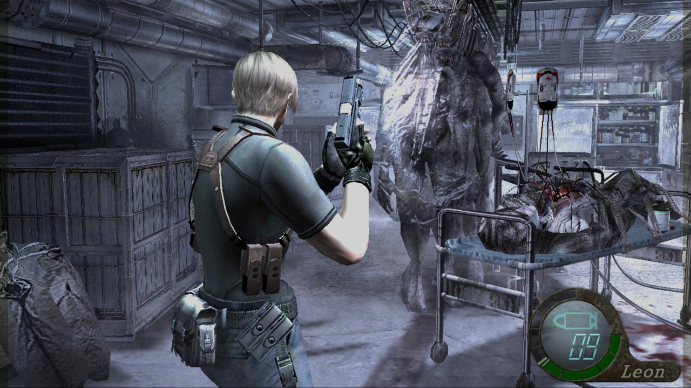
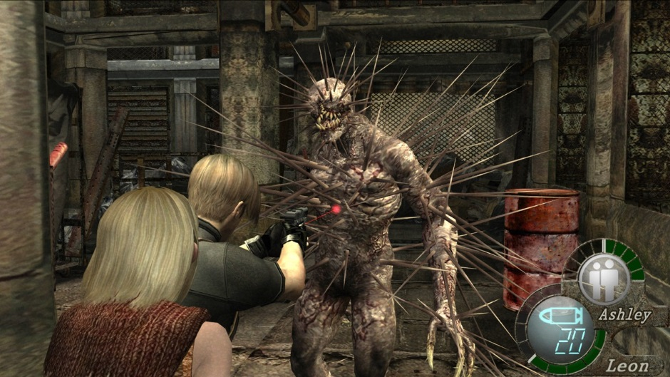
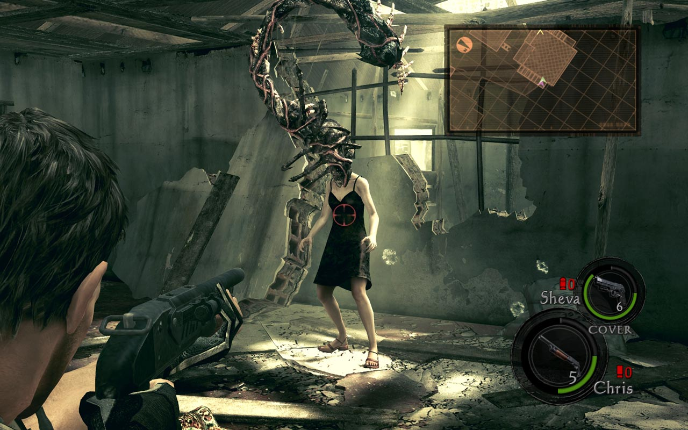

رزیدنت ایول (به انگلیسی: Resident Evil) به معنی: «شر یا بدی پایدار» که در ژاپن با نام بایوهزرد (به ژاپنی: バイオハザード Baiohazādo) و همچنین در ایران با نام رزیدنت اِویل و اقامتگاه شیطان نیز شناخته میشود، عنوان یک مجموعه بازی ویدئویی به سبک ترس و بقا است که توسط شرکت ژاپنی کپکام و خالق آن شینجی میکامی ساخته و منتشر شدهاست. این مجموعه در حقیقت، نخستین بازی ارائهشده در قالب ژانر ترس و بقا است[۱] و در ابتدا تنها بازی ویدئویی بود و سپس تبدیل به یک فرانشیز شد، و از روی داستان آن، کتاب کمیک، رمان، نمایشنامههای آوایی و سری فیلمهای سینمایی و انیمیشن نیز ساخته شد. داستان کلی این مجموعه راجع به ویروس تی (سلاحی که باعث ایجاد جهشهای بیولوژیکی و ایجاد مردههای متحرک و هیولاهای دیگر میشود) که توسط شرکت خیالی آمبرلا خلق شدهاست و تلاش چند شخصیت زن و مرد برای مهار و مبارزه با پیامدهای آن است. اولین قسمت این سری در سال ۱۹۹۶ در سبک سورویوال هارور منتشر شد، اما با گذشت زمان، از تلفیق چند سبک دیگر در آن نیز استفاده شد. این مجموعه دارای ترکیبی از سبک اکشن و الهام گرفته از فیلمهای ترسناک و حل معماها میباشد، اما از نسخه رزیدنت ایول ۴ به بعد تمرکز بازی بیشتر بر روی صحنههای اکشن و ارتقاء سلاح در بازی بوده، و شامل معماهای کمتر و سادهتر از نسخههای قبل میباشد.
این مجموعه با فروش ۱۳۰ میلیون نسخه تا سال ۲۰۲۰، به بزرگترین مجموعه بازی شرکت کپکام مبدل شده و همچنین این سری جرقهای بود برای آغاز سبک بازیهای سورویوال هارور که البته خود آن نیز از بازیهایی پیشین این سبک نظیر خانه زیبا (توسط کپکام) و سری بازی تنها در تاریکی تأثیر گرفتهاست

رمانهای نوشته شده بر اساس بازی
- رزیدنت ایول: دسیسه آمبرلا
- رزیدنت ایول: شهر مردگان
- رزیدنت ایول: دنیای زیرین
- رزیدنت ایول: نمسیس
- رزیدنت ایول: کد ورونیکا
- رزیدنت ایول: آستانه بحران